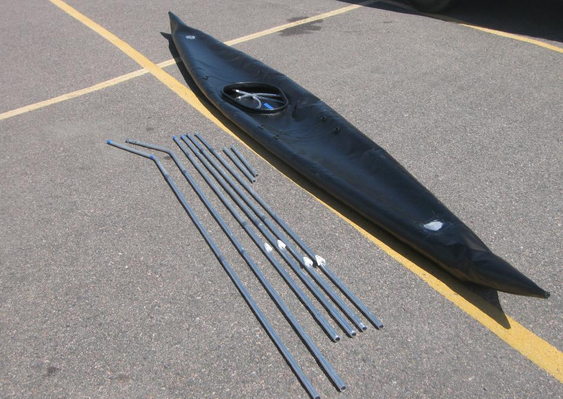

| Sonnet ( Aluminum Frame ) | Menu Previous Page Next Page |
|

The Sonnet 14 and Sonnet 16 frames , unlike standard folding kayak frames, cannot be assembled seperately from the skin. The frame has only 3 stringers ( keel, two chines, and two cross brace tubes) with no HDPE cross sections, or connections at the stems. Therefore, the aluminum "frame" tubes must be inserted into the 4 sponson skin to achieve the final shape. The tubes, in concert with the inflated sponsons, define these Inflatable / Folder hybrids. This simple structure permits quick "inside the skin" assembly, light weight, and SOF kayak performnce.
Note: Before starting the aluminum frame construction process, read and understand the "Frame Construction Section" of the Folding Kayak Builders Manual. It will discuss the materials and techniques to be used in great detail. The Inflatable / Folding Kayak Builders Manual will only address those frame constructions procedures that are specific to the Sonnet inflatales. Use the {Back} key to return. |
|